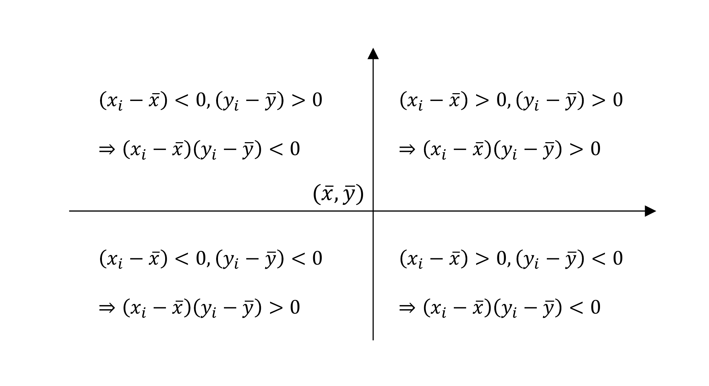
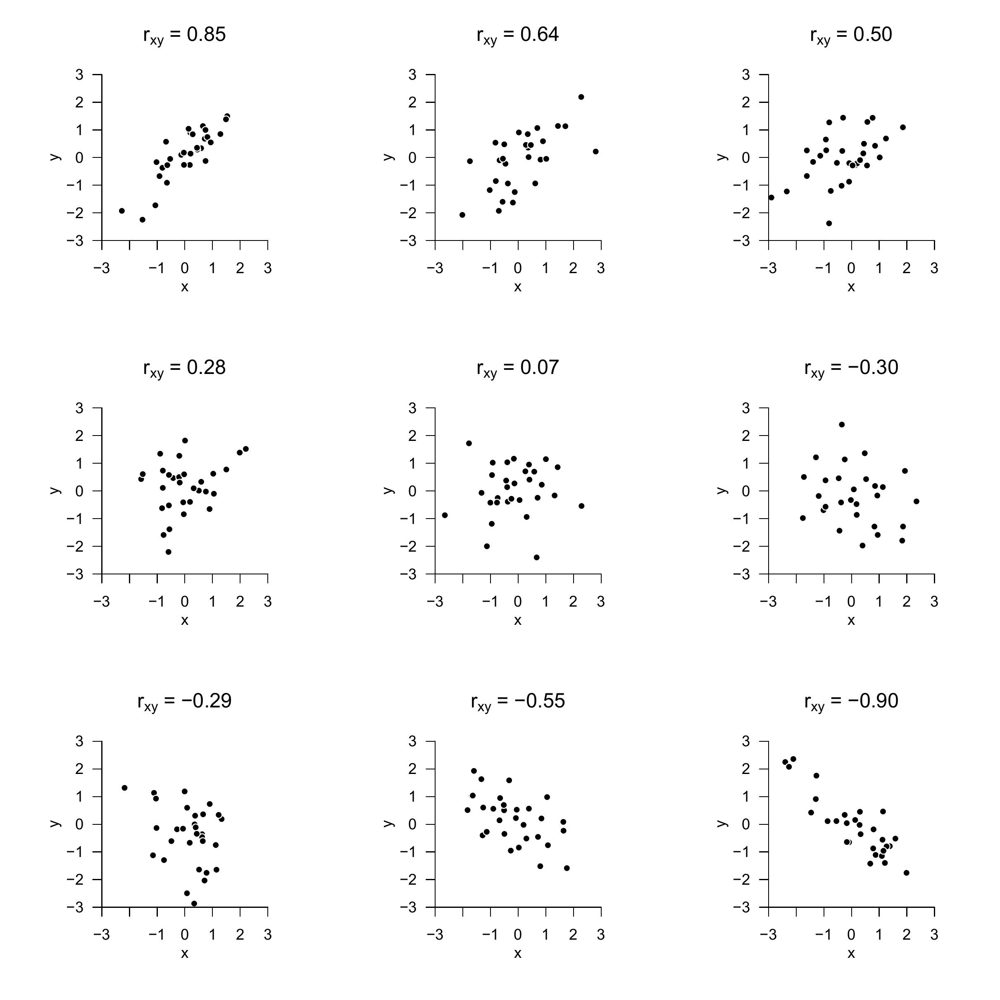
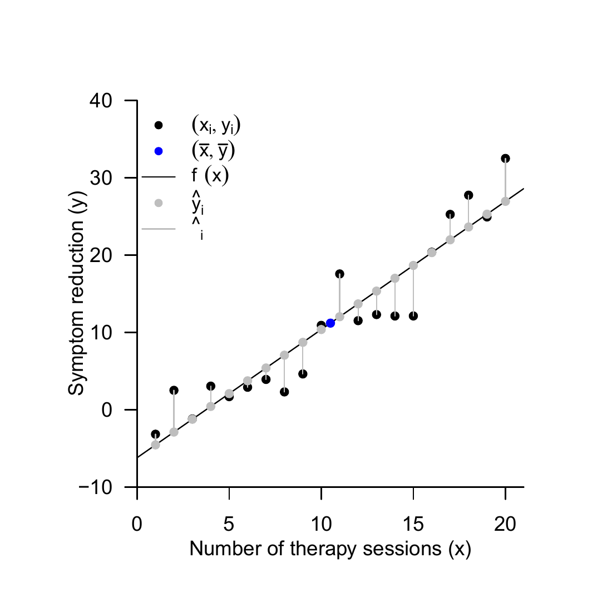
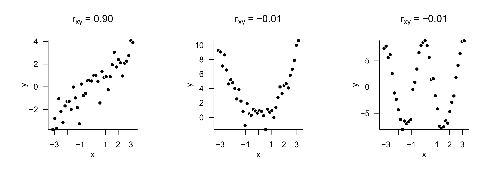

The concepts of regression and correlation are closely intertwined and ultimately serve to quantify linear-affine dependencies between independent and dependent variables. A central topic of this section is therefore the equivalences between the two concepts. In contrast to regression, in correlation both the dependent and the independent variable are modeled as random variables; the probabilistic complexity of correlation is therefore somewhat higher than that of regression and of the general linear model. To approach the relationships between regression and correlation, we first recall the concept and mechanics of sample correlation in Section 35.1. In Section 35.2, we use the \(\mathrm{R}^2\) statistic to consider the relationship between sample correlation and fitting line and give a first example of the idea of a variance decomposition. Finally, in Section 35.3, we discuss first aspects for understanding sample correlation in a probabilistic context. As an application example, we use throughout the example dataset on the relationship between psychotherapy duration and symptom reduction introduced in Chapter 34.
35.1 Basics
We first recall the concept of the correlation of two random variables.
Definition 35.1 (Correlation) The correlation of two random variables \(\xi\) and \(\upsilon\) is defined as \[\begin{equation}
\rho(\xi, \upsilon):=\frac{\mathbb{C}(\xi, \upsilon)}{\mathbb{S}(\xi) \mathbb{S}(\upsilon)}
\end{equation}\] where \(\mathbb{C}(\xi, \upsilon)\) denotes the covariance of \(\xi\) and \(\upsilon\), and \(\mathbb{S}(\xi)\) and \(\mathbb{S}(\upsilon)\) denote the standard deviations of \(\xi\) and \(\upsilon\), respectively.
The number \(\rho(\xi, \upsilon)\) is also called the correlation coefficient of \(\xi\) and \(\upsilon\). We have already seen that \(-1 \leq \rho(\xi, \upsilon) \leq 1\) holds and that \(\xi\) and \(\upsilon\) are called uncorrelated when \(\rho(\xi, \upsilon)=0\). Furthermore, we have already seen that independence of the random variables \(\xi\) and \(\upsilon\) always implies uncorrelatedness of \(\xi\) and \(\upsilon\), but that, in general, uncorrelatedness of \(\xi\) and \(\upsilon\) does not imply independence of \(\xi\) and \(\upsilon\).
If realizations of two random variables are available as a bivariate dataset, then the realization-specific sample correlation can be determined according to the following definition.
Definition 35.2 (Sample correlation) Let \(\left\{\left(x_{1}, y_{1}\right), \ldots,\left(x_{n}, y_{n}\right)\right\} \subset \mathbb{R}^{2}\) be a dataset. Furthermore, let:
The sample means of the \(x_{i}\) and \(y_{i}\) be defined as \[\begin{equation}
\bar{x}:=\frac{1}{n} \sum_{i=1}^{n} x_{i} \mbox{ and } \bar{y}:=\frac{1}{n} \sum_{i=1}^{n} y_{i}
\end{equation}\]
The sample standard deviations of the \(x_{i}\) and \(y_{i}\) be defined as \[\begin{equation}
s_{x}:=\sqrt{\frac{1}{n-1} \sum_{i=1}^{n}\left(x_{i}-\bar{x}\right)^{2}} \mbox{ and } s_{y}:=\sqrt{\frac{1}{n-1} \sum_{i=1}^{n}\left(y_{i}-\bar{y}\right)^{2}} .
\end{equation}\]
The sample covariance of \(\left(x_{1}, y_{1}\right), \ldots,\left(x_{n}, y_{n}\right)\) be defined as \[\begin{equation}
c_{x y}:=\frac{1}{n-1} \sum_{i=1}^{n}\left(x_{i}-\bar{x}\right)\left(y_{i}-\bar{y}\right)
\end{equation}\]
Then the sample correlation of \(\left(x_{1}, y_{1}\right), \ldots,\left(x_{n}, y_{n}\right)\) is defined as \[\begin{equation}
r_{x y}:=\frac{c_{x y}}{s_{x} s_{y}}
\end{equation}\] and is also called Pearson’s sample correlation coefficient.
The following R code evaluates the sample correlation of the example dataset.
# automatic computation with cor()r_xy =cor(x_i,y_i) # r_{xy}print(r_xy) # output
[1] 0.9378162
In the example dataset, the number of therapy sessions and symptom reduction are therefore highly correlated with \(r_{x y}=0.93\). In general, absolute values of \(r_{x y}\) larger than about 0.70 are called high correlation, absolute values of \(r_{x y}\) between about 0.30 and 0.70 are called medium correlation, and absolute values of \(r_{x y}\) between 0.00 and 0.30 are called low correlation. A low correlation between two variables does not necessarily mean, however, that this correlation is irrelevant (think of health risk factors), just as a high correlation between two variables need not be trivial (think of the correlation between body height and shoe size).

Figure 35.1: Mechanics of the sample-correlation sum terms.
Because the sample correlation is merely the sample covariance \(c_{x y}\) normalized to the interval \([-1,1]\), the magnitude of the sample correlation and, in particular, its sign are decisively determined by the values of the sample covariance sum terms \(\left(x_{i}-\bar{x}\right)\left(y_{i}-\bar{y}\right)\). What is decisive is how often, across the data pairs \(\left(x_{i}, y_{i}\right)\), the \(x_{i}\) and \(y_{i}\) deviate from their respective sample means in the same or in opposite directions. This is shown schematically in Figure 35.1. When deviations from the respective means occur frequently in the same direction, both in the positive and in the negative direction, the product \(\left(x_{i}-\bar{x}\right)\left(y_{i}-\bar{y}\right)\) is positive and thus contributes to a positive sample covariance. When deviations from the respective means occur frequently in opposite directions, the product \(\left(x_{i}-\bar{x}\right)\left(y_{i}-\bar{y}\right)\) is often negative and thus contributes to a negative sample covariance. If deviations of the \(x_{i}\) and \(y_{i}\) in the same direction and in opposite directions both occur often, positive and negative contributions to the sample covariance sum tend to cancel, and the result is a low sample covariance or a sample correlation coefficient near zero. Figure 35.2 shows bivariate datasets of \(n=30\) data points each together with their respective sample correlation coefficients.
The advantage of the sample correlation coefficient over the sample covariance as an association measure is that the absolute value of the sample correlation coefficient remains unchanged under linear-affine transformation of the underlying set of values, whereas the sample covariance changes its value depending on the chosen scale. One therefore also says that the sample correlation coefficient is scale-independent. This is the central statement of the following theorem.
Theorem 35.1 (Sample correlation under linear-affine transformation) For a dataset \(\left\{\left(x_{i}, y_{i}\right)\right\}_{i=1, \ldots n} \subset \mathbb{R}^{2}\), let \(\left\{\left(\tilde{x}_{i}, \tilde{y}_{i}\right)\right\}_{i=1, \ldots n} \subset \mathbb{R}^{2}\) be the linearly-affinely transformed dataset with \[\begin{equation}
\left(\tilde{x}_{i}, \tilde{y}_{i}\right)=\left(a_{x} x_{i}+b_{x}, a_{y} y_{i}+b_{y}\right), a_{x}, a_{y} \neq 0 .
\end{equation}\] Then \[\begin{equation}
\left|r_{\tilde{x} \tilde{y}}\right|=\left|r_{x y}\right| .
\end{equation}\]

Figure 35.2: Examples of bivariate datasets and their sample correlations.
The so-called coefficient of determination \(\mathrm{R}^{2}\) is a popular, frequently reported statistic for describing the strength of association between the values of an independent and a dependent variable. Numerically, \(\mathrm{R}^{2}\) is merely the squared sample correlation coefficient. If the sample correlation is, for example, \(r_{x y}=0.5\), then \(\mathrm{R}^{2}=0.5^{2}=0.25\); if, by contrast, the sample correlation is \(r_{x y}=-0.5\), then analogously \(\mathrm{R}^{2}=(-0.5)^{2}=0.25\). These examples show that \(\mathrm{R}^{2}\) contains less information about the raw data than \(r_{x y}\) because the sign, and hence the direction of the association, is lost. In itself, reporting \(\mathrm{R}^{2}\) instead of \(r_{x y}\) as a descriptive statistic for describing the strength of association between the values of an independent and a dependent variable has no advantage. Nevertheless, we want to look at \(\mathrm{R}^{2}\) somewhat more closely here, because a deeper understanding of \(\mathrm{R}^{2}\) allows, on the one hand, entry into the concept of variance decompositions and, on the other hand, further clarifies the relationships between the concepts of fitting line and sample correlation. To this end, we first extend the description of the fitting line from Section 34.1 by the concepts of explained values and residuals.
Definition 35.3 (Explained values and residuals of a fitting line) Given a dataset \(\left\{\left(x_{1}, y_{1}\right), \ldots,\left(x_{n}, y_{n}\right)\right\} \subset \mathbb{R}^{2}\) and the fitting line belonging to this dataset \[\begin{equation}
f_{\hat{\beta}}: \mathbb{R} \rightarrow \mathbb{R}, x \mapsto f_{\hat{\beta}}(x):=\hat{\beta}_{0}+\hat{\beta}_{1} x
\end{equation}\] then, for \(i=1, \ldots, n\), \[\begin{equation}
\widehat{y}_{i}:=\hat{\beta}_{0}+\hat{\beta}_{1} x_{i}
\end{equation}\] are called the explained values by the fitting line, and \[\begin{equation}
\hat{\varepsilon}_{i}:=y_{i}-\hat{y}_{i}
\end{equation}\] are called the residuals of the fitting line.
Formulated somewhat more generally, the explained values are thus the data predictions of the model based on the estimated parameter values, whereas the residuals denote the differences between the estimated data predictions and the observed data values. Figure 35.3 illustrates these concepts using the fitting line of the example dataset.

Figure 35.3: Fitting line, explained values, and residuals for the example dataset.
Using the concepts of explained values and residuals, the following sum-of-squares decomposition can now be stated when a fitting line of a dataset is available.
Theorem 35.2 (Sum-of-squares decomposition for a fitting line) For a dataset \(\left\{\left(x_{1}, y_{1}\right), \ldots,\left(x_{n}, y_{n}\right)\right\} \subset \mathbb{R}^{2}\) and its associated fitting line \(f_{\hat{\beta}}\), let, for \[\begin{equation}
\bar{y}:=\frac{1}{n} \sum_{i=1}^{n} y_{i} \mbox{ and } \hat{y}_{i}:=\hat{\beta}_{0}+\hat{\beta}_{1} x_{i} \text {, for } i=1, \ldots, n
\end{equation}\] the sample mean of the \(y_{i}\) values and the values explained by the fitting line be given, respectively. Furthermore, let
the total sum of squares be defined as \[\begin{equation}
\mbox{SQT} := \sum_{i=1}^{n}\left(y_{i}-\bar{y}\right)^{2}
\end{equation}\]
the explained sum of squares be defined as \[\begin{equation}
\mbox{SQE} := \sum_{i=1}^{n}\left(\widehat{y}_{i}-\bar{y}\right)^{2}
\end{equation}\]
the residual sum of squares be defined as \[\begin{equation}
\mbox{SQR} := \sum_{i=1}^{n}\left(y_{i}-\hat{y}_{i}\right)^{2}
\end{equation}\]
Then \[\begin{equation}
\mbox{SQT} = \mbox{SQE} + \mbox{SQR}
\end{equation}\]
The concepts introduced in Theorem 35.2 can be intuitively explained as follows:
SQT represents the total variability of the \(y_{i}\) values around their mean \(\bar{y}\).
SQE represents the variability of the explained values \(\hat{y}_{i}\) around their mean. Large values of SQE therefore represent a large absolute slope of the \(y_{i}\) with the \(x_{i}\), and small values of SQE represent a small absolute slope of the \(y_{i}\) with the \(x_{i}\). SQE is thus a measure of the strength of the linear association between the \(x_{i}\) and \(y_{i}\) values.
SQR is the sum of squared residuals, because \[\begin{equation}
\mathrm{SQR}:=\sum_{i=1}^{n}\left(y_{i}-\hat{y}_{i}\right)^{2}:=\sum_{i=1}^{n} \hat{\varepsilon}_{i}^{2}
\end{equation}\]
Large values of SQR therefore represent large deviations of the explained from the observed \(y_{i}\) values, and small values of SQR represent small deviations of the explained from the observed \(y_{i}\) values. SQR is thus a measure of the quality of the description of the dataset by the fitting line.
The central statement of Theorem 35.2 is that the total scatter of the \(y_{i}\) values around their mean \(\bar{y}\) is composed precisely of the sum of the strength of the linear association between the \(x_{i}\) and \(y_{i}\) values (that is, the “deterministic influence” of the \(x_{i}\) on the \(y_{i}\)) and the deviations from this linear association (that is, the “noise”). Although SQT is formally not a variance measure, in this context one often speaks of a variance decomposition into explained variance and residual variance. This motif is a central aspect of the general linear model and will be taken up again in later chapters. For the moment, Theorem 35.2 allows the following definition of the coefficient of determination \(\mathrm{R}^{2}\).
Definition 35.4 (Coefficient of determination \(\mathrm{R}^{2}\)) For a dataset \(\left\{\left(x_{1}, y_{1}\right), \ldots,\left(x_{n}, y_{n}\right)\right\} \subset \mathbb{R}^{2}\) and its associated fitting line \(f_{\hat{\beta}}\), as well as the corresponding explained sum of squares SQE and total sum of squares SQT, \[\begin{equation}
\mathrm{R}^{2}:=\frac{\mathrm{SQE}}{\mathrm{SQT}}
\end{equation}\] is called the coefficient of determination.
The following theorem now gives the relationship mentioned above between the coefficient of determination and the sample correlation.
Theorem 35.3 (Sample correlation and coefficient of determination) For a dataset \(\left\{\left(x_{1}, y_{1}\right), \ldots,\left(x_{n}, y_{n}\right)\right\} \subset \mathbb{R}^{2}\), let \(\mathrm{R}^{2}\) be the coefficient of determination and let \(r_{x y}\) be the sample correlation. Then \[\begin{equation}
\mathrm{R}^{2} = r_{x y}^{2}
\end{equation}\]
Note that, with \(-1 \leq r_{x y} \leq 1\), Theorem 35.3 directly implies that \(0 \leq \mathrm{R}^{2} \leq 1\). According to Definition 35.4, \(\mathrm{R}^{2}=0\) holds exactly when \(\mathrm{SQE}=0\). Thus, \(\mathrm{R}^{2}=0\) means that the data variability explained by the fitting line is zero and therefore describes the case of the worst possible data explanation by the fitting line. On the other hand, \(\mathrm{R}^{2}=1\) holds exactly when \(\mathrm{SQE}=\mathrm{SQT}\). Thus, \(\mathrm{R}^{2}=1\) means that the total scatter equals the scatter explained by the fitting line and describes the case in which all data variability can be explained by the fitting line. One therefore also often says, somewhat imprecisely, that \(\mathrm{R}^{2}\) represents the variance explained by the fitting line as a proportion of the total variance of the data. In addition to the respective sample correlation, Figure 35.2 also lists the coefficient of determination for each of the bivariate example datasets.
35.3 Correlation and linear-affine dependence
The fact that stochastic independence implies uncorrelatedness, but conversely the uncorrelatedness of two random variables does not imply their stochastic independence, suggests that the correlation of two random variables measures only certain forms of dependence between variables. Figure 35.4 illustrates this using three simulation examples.

Figure 35.4: Correlation and dependence.
Figure 35.4 A shows a realization of the model \[\begin{equation}
y_i=x_{i}+\varepsilon_{i} \mbox{ with } \varepsilon_{i} \sim N(0,1) \mbox{ for } i=1,...,n.
\end{equation}\] The sample correlation of the dataset \(\left\{\left(x_{i}, y_{i}\right)\right\}_{i=1}^{n}\) is \(r_{x y}=0.90\) here. There is a clear dependence of the value of the \(y_i\) realization \(y_{i}\) on the value \(x_{i}\): the higher the value of \(x_{i}\), the higher the expectation for the value of \(y_i\). Figure 35.4 B shows a realization of the model \[\begin{equation}
y_i=x_{i}^{2}+\varepsilon_{i} \mbox{ with } \varepsilon_{i} \sim N(0,1) \mbox{ for } i=1,...,n.
\end{equation}\] The sample correlation of the dataset \(\left\{\left(x_{i}, y_{i}\right)\right\}_{i=1}^{n}\) is \(r_{x y} = -0.01\) here. The sample correlation is therefore minimal. However, here too there is a clear dependence of the value of the \(y_i\) realization \(y_{i}\) on the value \(x_{i}\): the higher or lower the value of \(x_{i}\), the higher the expectation for the value of \(y_i\); there is a quadratic relationship. A similar picture emerges when considering Figure 35.4 C, a realization of the model \[\begin{equation}
y_i
= 8 \cos \left(2 x_{i}\right)+\varepsilon_{i} \mbox{ with } \varepsilon_{i} \sim N(0,1) \mbox{ for } i=1,...,n.
\end{equation}\] Here too, a dependence of the value of the \(y_i\) realization \(y_{i}\) on the value \(x_{i}\) is apparent, in this case in the sense of a cyclic dependence, but the sample correlation is again minimal with \(r_{x y}=-0.01\). These simulation examples therefore intuitively demonstrate that sample correlation can be vanishingly small even when clear dependencies between two variables exist. As a general measure of the dependence of two variables, correlation is therefore unsuitable. This circumstance is based on the fact that correlation is only a measure of the linear-affine association of two random variables, but not of their stochastic dependence. We formalize and specify this statement in the following theorem.
Theorem 35.4 (Correlation and linear-affine dependence) Let \(x\) and \(y\) be two random variables with positive variance. Then there is a linear-affine dependence of the form \[\begin{equation}
y=\beta_{0}+\beta_{1} x \mbox{ with } \beta_{0}, \beta_{1} \in \mathbb{R}
\end{equation}\] between \(x\) and \(y\) if and only if \[\begin{equation}
\rho(x, y)=1 \mbox{ or } \rho(x, y)=-1
\end{equation}\] holds.
Proof. We restrict ourselves to proving the statement that \(y=\beta_{0}+\beta_{1} x\) implies \(\rho(x, y)= \pm 1\). To this end, we first note that, by the theorems on the properties of expectation and variance, \[\begin{equation}
\mathbb{E}(y) = \beta_{0}+\beta_{1} \mathbb{E}(x)
\mbox{ and }
\mathbb{V}(y) = \beta_{1}^{2} \mathbb{V}(x)
\end{equation}\] hold. Because \(\mathbb{V}(x)>0\) and \(\mathbb{V}(y)>0\), it follows that \(\beta_{1} \neq 0\). Thus, \[\begin{equation}
\beta_{1} > 0
\Rightarrow
\mathbb{S}(y)=\beta_{1} \mathbb{S}(x) > 0
\mbox{ and }
\beta_{1} < 0
\Rightarrow
\mathbb{S}(y) = -\beta_{1} \mathbb{S}(x) > 0.
\end{equation}\] Furthermore, \[\begin{equation}
\begin{aligned}
y -\mathbb{E}(y)
& = \beta_{0}+\beta_{1} x-\mathbb{E}(y) \\
& = \beta_{0}+\beta_{1} x-\beta_{0}-\beta_{1} \mathbb{E}(x) \\
& = \beta_{1} x-\beta_{1} \mathbb{E}(x) \\
& = \beta_{1}(x-\mathbb{E}(x)) .
\end{aligned}
\end{equation}\] For the covariance of \(x\) and \(y\), we therefore obtain \[\begin{equation}
\begin{aligned}
\mathbb{C}(x,y)
& = \mathbb{E}((y-\mathbb{E}(y))(x-\mathbb{E}(x))) \\
& = \mathbb{E}\left(\beta_{1}(x-\mathbb{E}(x))(x-\mathbb{E}(x))\right) \\
& = \beta_{1} \mathbb{E}\left((x-\mathbb{E}(x))^{2}\right) \\
& = \beta_{1} \mathbb{V}(x) .
\end{aligned}
\end{equation}\] Thus, for the correlation of \(x\) and \(y\), \[\begin{equation}
\rho(x, y)
= \frac{\mathbb{C}(x,y)}{\mathbb{S}(x) \mathbb{S}(y)}
= \pm \frac{\beta_{1} \mathbb{V}(x)}{\mathbb{S}(x) \beta_{1} \mathbb{S}(x)}
= \pm \frac{\beta_{1} \mathbb{V}(x)}{\beta_{1} \mathbb{V}(x)}
= \pm 1
\end{equation}\]
The correlation of two random variables is therefore maximal exactly when a linear-affine relationship exists between the two random variables. Here, linear-affine dependence of \(y\) on \(x\) also always implies linear-affine dependence of \(x\) on \(y\), because \[\begin{equation}
y = \beta_{0} + \beta_{1} x
\Leftrightarrow
-\beta_{0} + y = \beta_{1} x
\Leftrightarrow
x = -\frac{\beta_{0}}{\beta_{1}}+\frac{1}{\beta_{1}} y
\Leftrightarrow
x = \tilde{\beta}_{0}+\tilde{\beta}_{1} y
\end{equation}\] with \[\begin{equation}
\tilde{\beta}_{0} = -\frac{\beta_{0}}{\beta_{1}} \mbox{ and } \tilde{\beta}_{1} = \frac{1}{\beta_{1}}.
\end{equation}\]
35.4 Bibliographic remarks
The concept of correlation appears, though based on earlier work for example by Bravais (1844), first in Galton (1890) (cf. Stigler (1986)), and is further developed among others through the work of Pearson (1895), Pearson (1896), Pearson (1900), and Pearson (1901) in the context of multivariate normal distributions. An early study on the relationship between correlation and causality is Wright (1921).
Bravais, A. (1844). Analyse mathématique : Sur les probabilités des erreurs de situation d’un point.
Pearson, K. (1895). Note on Regression and Inheritance in the Case of Two Parents. Proceedings of the Royal Society of London, 5, 240–242. https://www.jstor.org/stable/115794
Pearson, K. (1896). Mathematical Contributions to the Theory of Evolution. III. Regression, Heredity, and Panmixia. Philosophical Transactions of the Royal Society of London. Series A, Containing Papers of a Mathematical or Physical Character, 18, 253–318. https://www.jstor.org/stable/90707
Pearson, K. (1900). On the criterion that a given system of deviations from the probable in the case of a correlated system of variables is such that it can be reasonably supposed to have arisen from random sampling. The London, Edinburgh, and Dublin Philosophical Magazine and Journal of Science, 50(302), 157–175. https://doi.org/10.1080/14786440009463897
Pearson, K. (1901). On lines and planes of closest fit to systems of points in space. The London, Edinburgh, and Dublin Philosophical Magazine and Journal of Science, 2(11), 559–572. https://doi.org/10.1080/14786440109462720
Stigler, S. M. (1986). The history of statistics: The measurement of uncertainty before 1900. Belknap Press of Harvard University Press.
Wright, S. (1921). Correlation and causation. Journal of Agriculture Research, 20(7), 557–585.